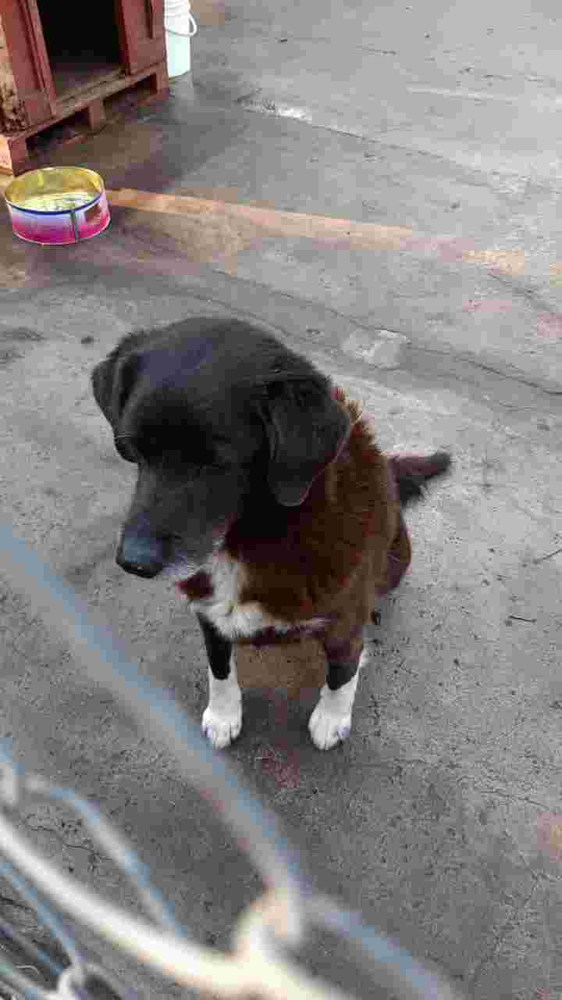
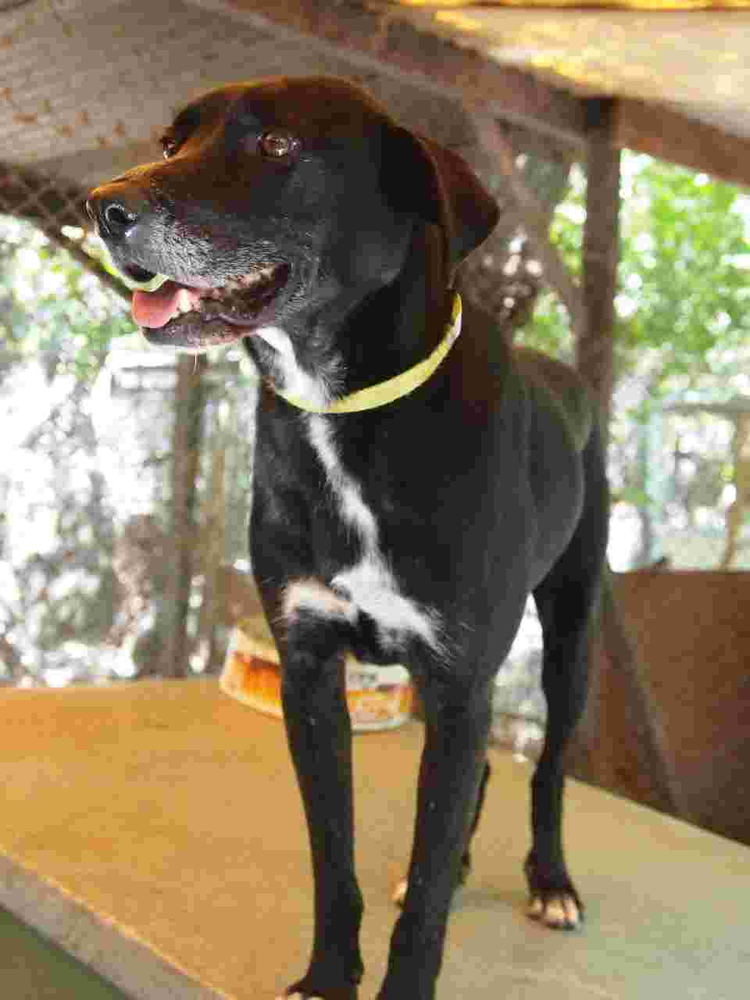
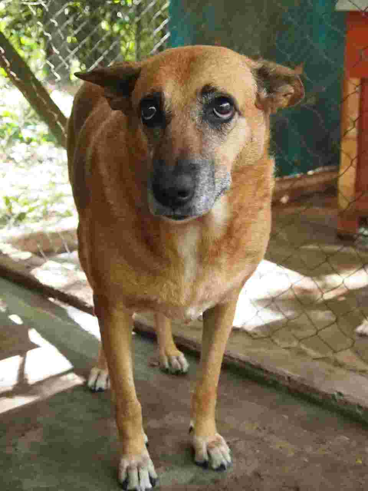
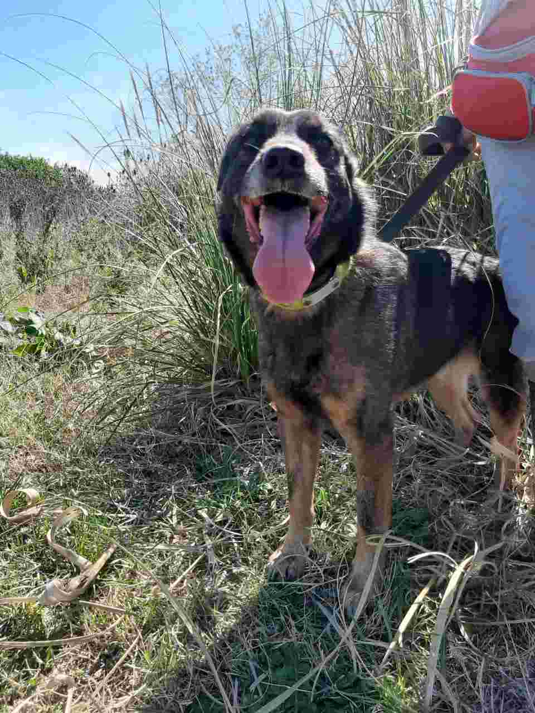
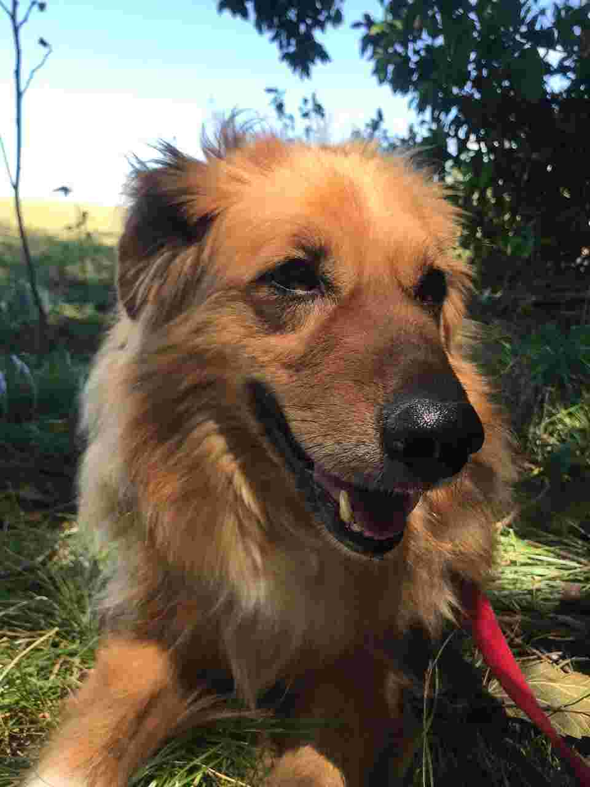
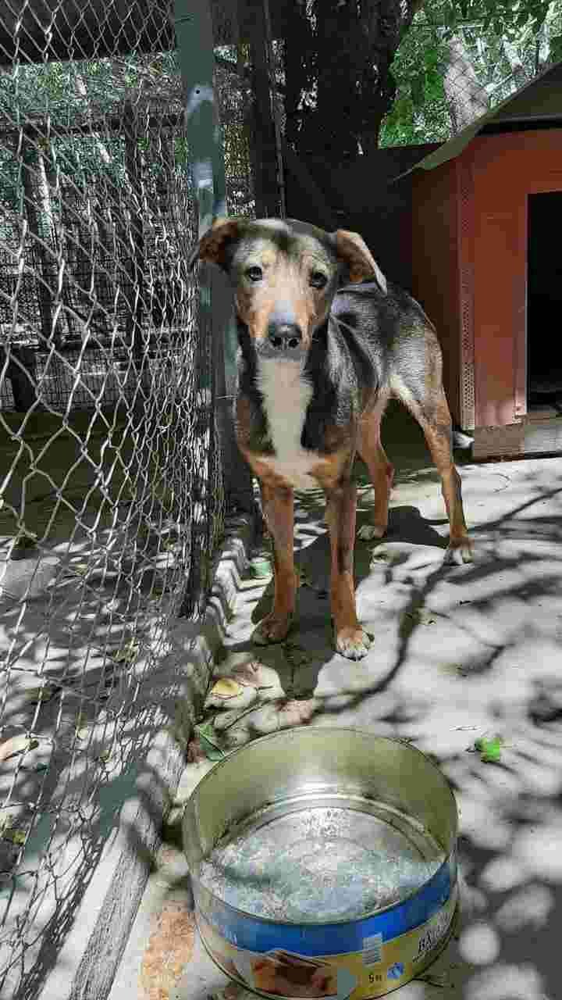

-

Arlt
Tiene 9 años. Vivió casi toda su vida en el Refugio Palomar. Es un poco tímido al princpio, pero una vez que entra en confianza es muy compañero y tranquilo. Tiene las vacunas al día y está castrado.
-

Carbón
Es un perro muy guardián. Necesita conocerte para entrar en confianza. Tiene aproximadamente 6 años. Actualmente vive en el Refugio Palomar. Le gustan mucho los mimos. Está castrado y con las vacunas al día.
-

Elisea
Es la compañera de canil de Artl. Es muy miedosa, pero a la larga entra en confianza. Le gusta tirarse en un hueco al pie de un árbol. Está castrada y vacunada.
-

Mickey
Es un perro muy enérgico. Necesita espacio para correr y jugar. Calculamos que tiene entre 5 y 6 años. Le gusta morder botellas y jugar a la pelea. Necesita adaptación previa ya que es un poco desconfiado. Está castrado y vacunado.
-

Martini
Perrito miedoso y tranquilo. Le gustan los paseos lentos y comer despacito. Necesita una familia que entienda sus tiempos y respete su espacio. Debe tener 7 años aproximadamente. Está castrado y vacunado.
-

Milo
Perro joven y confianzudo, le encantan los paseos y los mimos. Tiene un poco más de un año. Está vacunado y recién castrado. Necesita espacio y paciencia, como todo cachorro.